Resistències equivalents¶
Aquesta unitat estudiarà les resistències equivalents dels circuits amb resistències de sèries, amb resistències i resistències paral·leles en conjunts mixtes.
{kind=link}
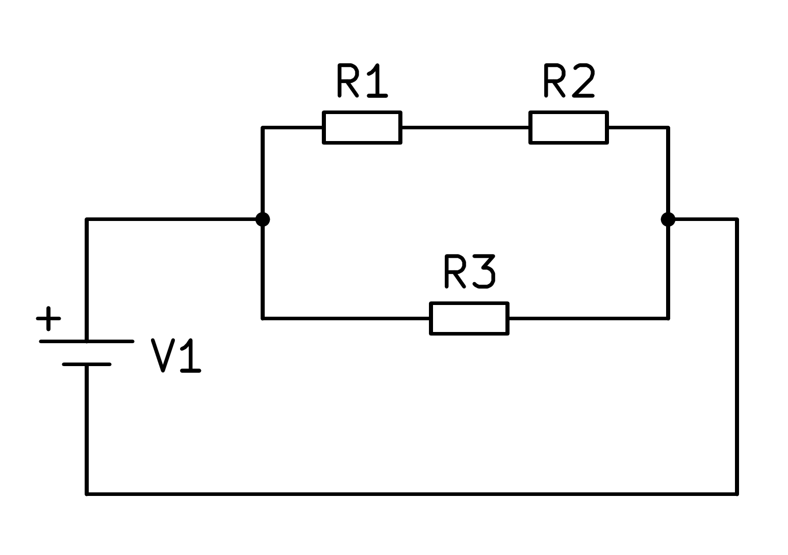
Una resistència equivalent a un circuit amb diverses resistències és la que passarà el mateix corrent que pel circuit en alimentar -los amb la mateixa font de tensió.
Índex de contingut:
- Resistència equivalent d’un circuit en sèrie
- Resistència equivalent d’un circuit paral·lel
- Resistència equivalent d’un circuit de sèrie paral·lela
- Resistència equivalent d’un circuit de sèries-peer
- Resistència equivalent d’un circuit de sèries dos paralls
- Resistència equivalent d’un circuit de dues sèries paral·leles
- Exercicis
- Qüestionaris
Resistència equivalent d’un circuit en sèrie¶
Es configura un circuit amb resistències en sèrie com a figura següent:
{kind=link}
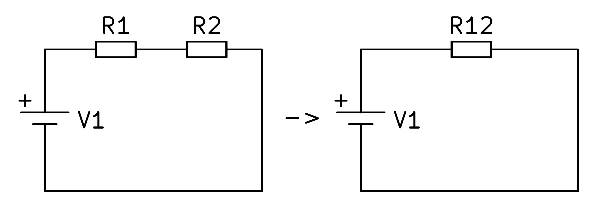
Aquest circuit es pot simplificar en un circuit amb una única resistència que té un valor equivalent a les resistències de dues sèries. Aquest circuit s’anomena circuit equivalent i el mateix corrent circularà que el circuit amb dues resistències.
Per calcular el valor de resistència equivalent a un circuit en sèrie, s’han d’afegir els valors de totes les resistències de la sèrie segons la fórmula següent:
En cas que el circuit estigui format per tres resistències de sèries:
{kind=link}
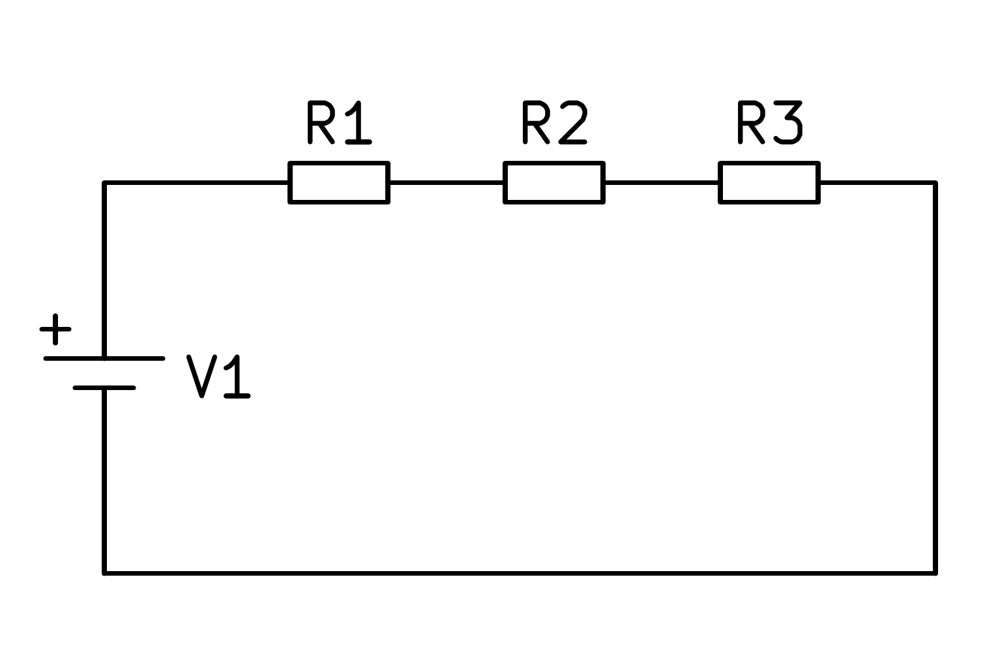
Cal afegir els valors de les tres resistències per calcular el valor de resistència equivalent, segons la fórmula següent:
Si afegim una resistència a la sèrie a un circuit, la resistència total augmentarà sempre i, per tant, el corrent total sempre disminuirà.
Resistència equivalent d’un circuit paral·lel¶
A la figura següent podeu veure un circuit amb resistències paral·leles i el seu circuit equivalent amb una única resistència:
{kind=link}
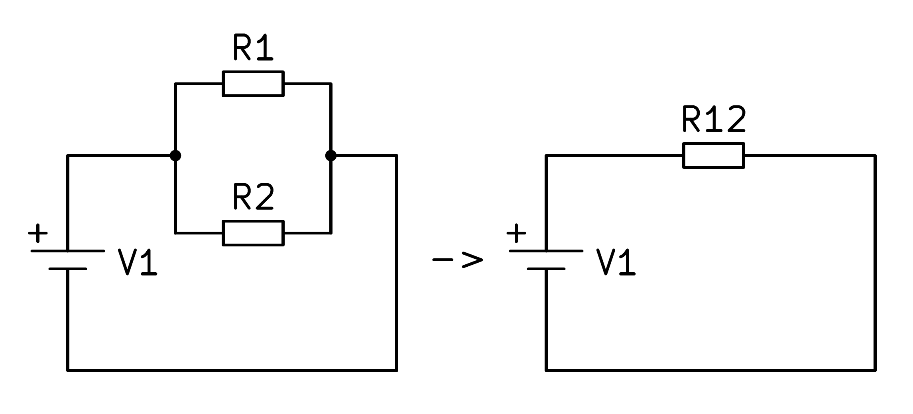
En el cas d’un circuit amb resistències paral·leles, la resistència equivalent es calcularà amb la inversa de la suma de la inversa de les resistències segons la fórmula següent:
La resistència equivalent d’un paral·lel sempre serà inferior a qualsevol de les resistències que formen el paral·lel.
Si el circuit consta de tres resistències en paral·lel, el càlcul es pot estendre a tres resistències en total segons la fórmula següent:
{kind=link}
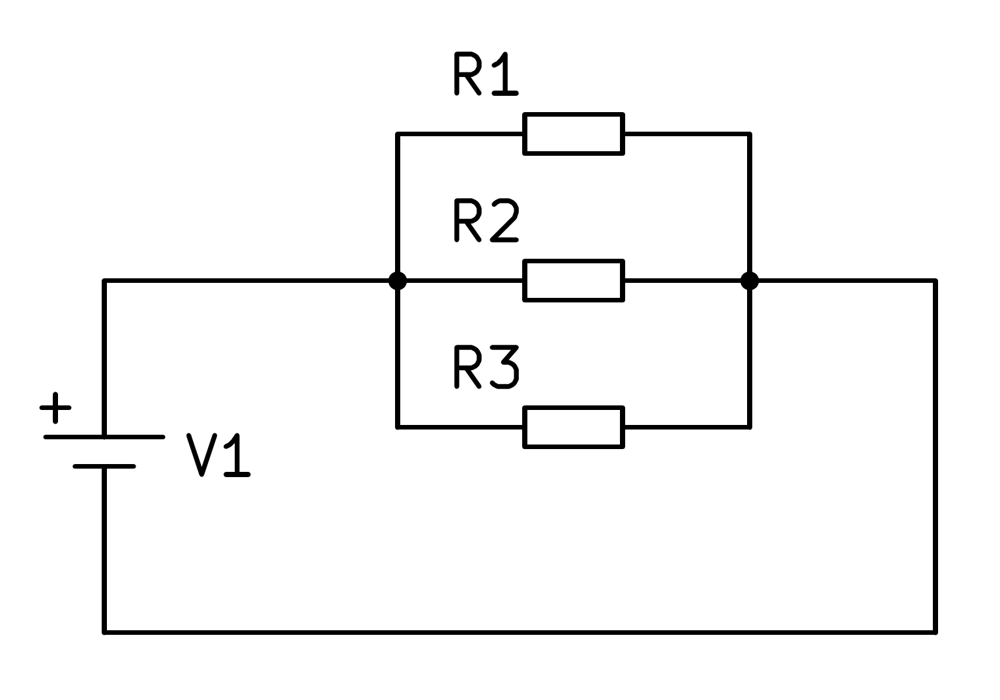
Si afegim una resistència paral·lela a un circuit, la resistència total sempre disminuirà i, per tant, el corrent total sempre augmentarà.
Resistència equivalent d’un circuit de sèrie paral·lela¶
Els circuits mixtes es componen de resistències en sèrie i resistències paral·leles. Per resoldre els circuits mixtes, caldrà resoldre el serial interior o els circuits paral·lels i, amb el circuit ja simplificat, resoldre els circuits de sèrie o paral·lel exteriors.
A continuació, veurem diversos exemples.
A la figura següent podem veure un circuit mixt de tres resistències:
{kind=link}
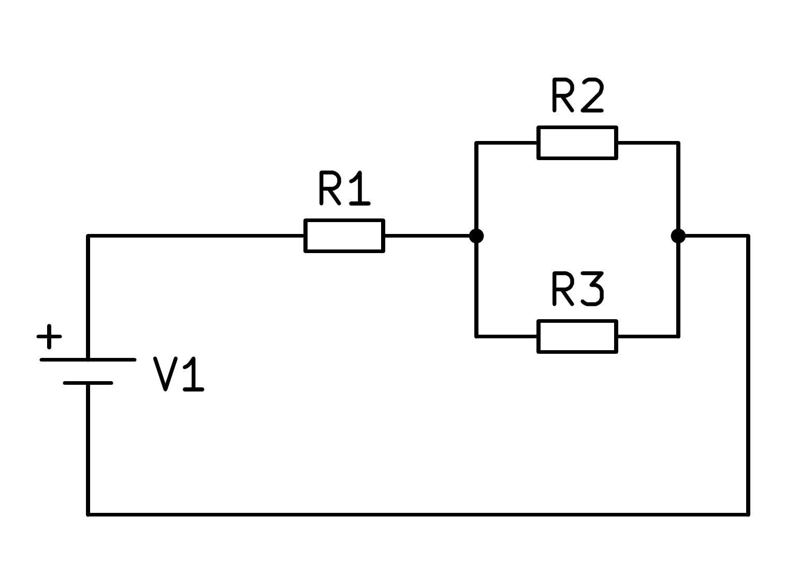
En aquest circuit mixt, el paral·lel format per resistències R2 i R3 s’ha de resoldre, cosa que simplifica segons la imatge següent.
{kind=link}
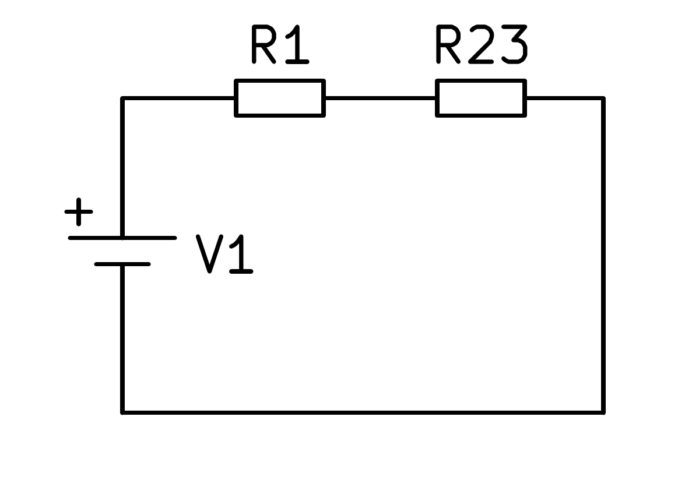
A continuació, podeu afegir les resistències R1 i R23 per calcular la resistència equivalent del circuit complet:
Resistència equivalent d’un circuit de sèries-peer¶
A la figura següent podem veure un altre circuit mixt de tres resistències.
En aquest circuit mixt primer, la sèrie formada per resistors R1 i R2 s’ha de resoldre afegint els seus valors, que es simplifica segons la imatge següent:
{kind=link}
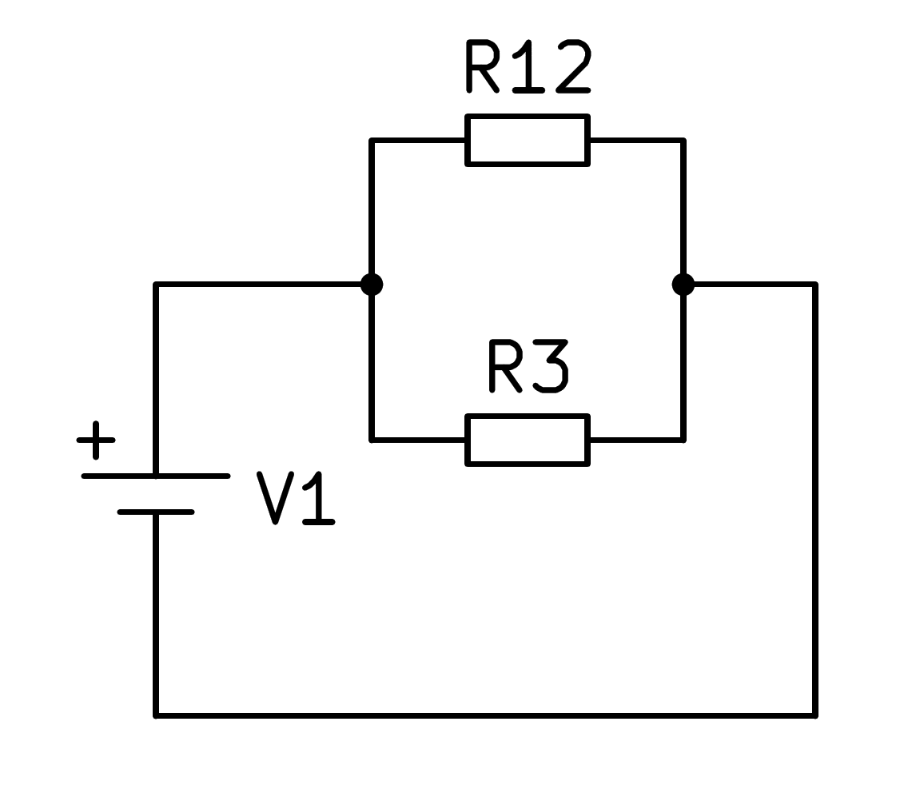
A continuació, podeu calcular el paral·lel de les resistències R12 i R3 per trobar la resistència equivalent del circuit complet:
Resistència equivalent d’un circuit de sèries dos paralls¶
A la figura següent podem veure un circuit mixt de quatre resistències:
{kind=link}
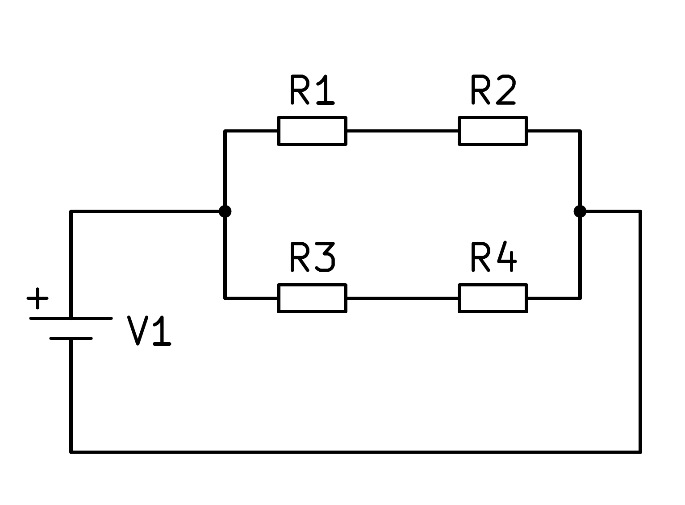
En aquest circuit mixt primer heu de calcular l’equivalent a la sèrie de resistències R1 i R2 i, d’altra banda, l’equivalent a la sèrie de les resistències R3 i R4, amb la qual el circuit es simplifica segons la imatge següent:
{kind=link}
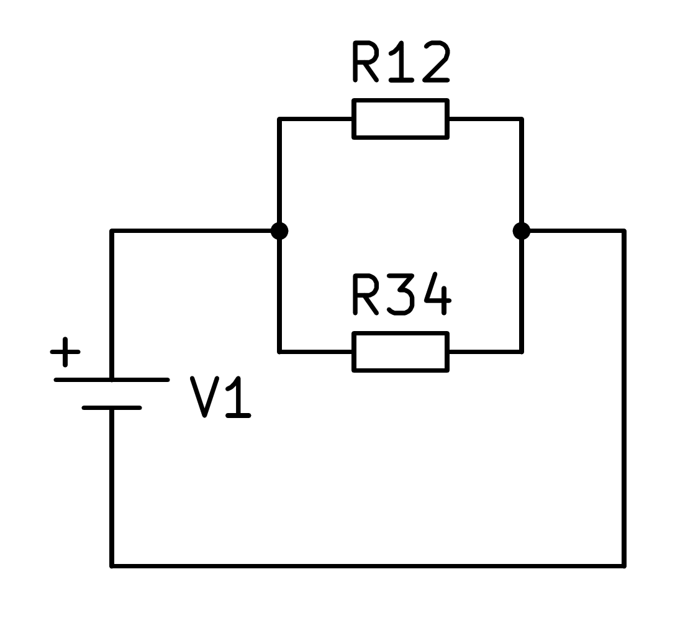
Un cop simplificat el circuit, el paral·lel de les dues resistències R12 i R34 es pot calcular segons la fórmula corresponent:
Resistència equivalent d’un circuit de dues sèries paral·leles¶
A la figura següent podem veure un altre circuit mixt de quatre resistències:
{kind=link}
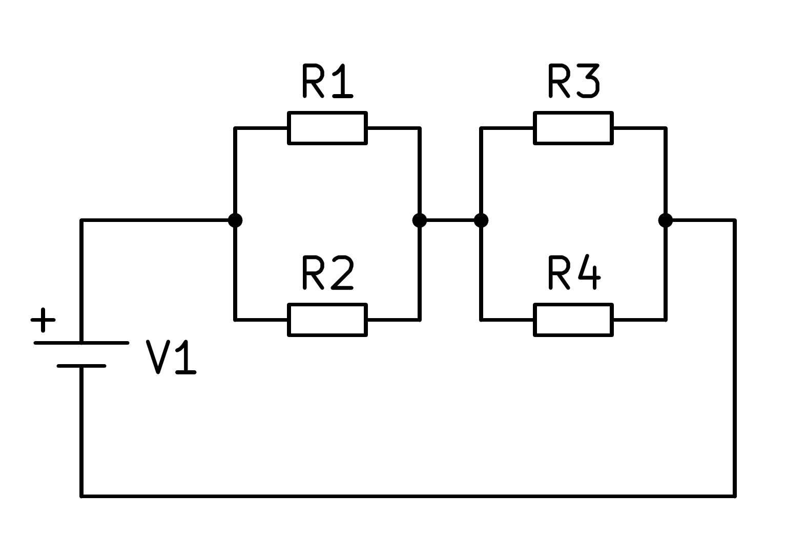
En aquest circuit mixt primer heu de calcular l’equivalent en paral·lel de les resistències R1 i R2 i, d’altra banda, l’equivalent en paral·lel de les resistències R3 i R4, amb les quals el circuit es simplifica segons la imatge següent:
{kind=link}
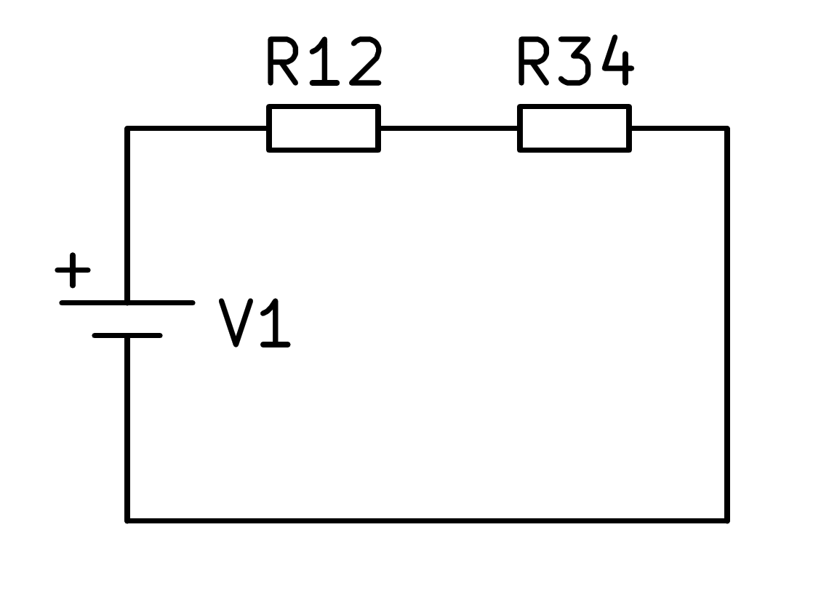
Un cop simplificat el circuit, podeu calcular la sèrie de les dues resistències R12 i R34 segons la fórmula corresponent:
Exercicis¶
Exercicis de càlcul de resistència equivalents en sèries, en paral·lel i en circuits mixtes.